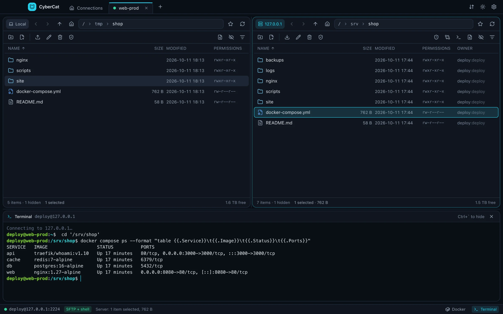
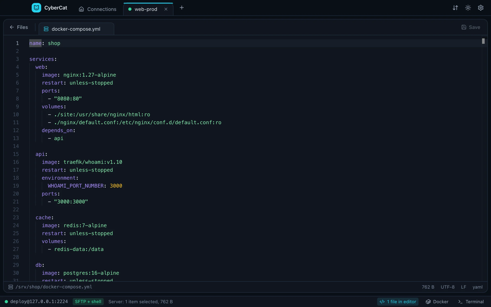
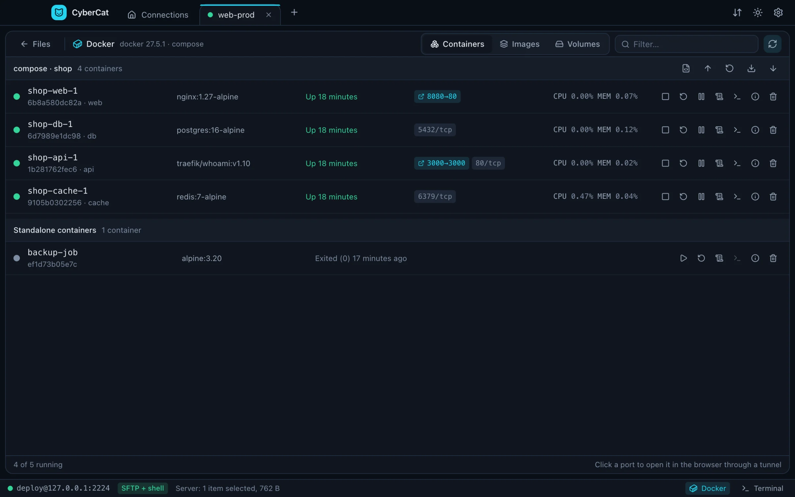
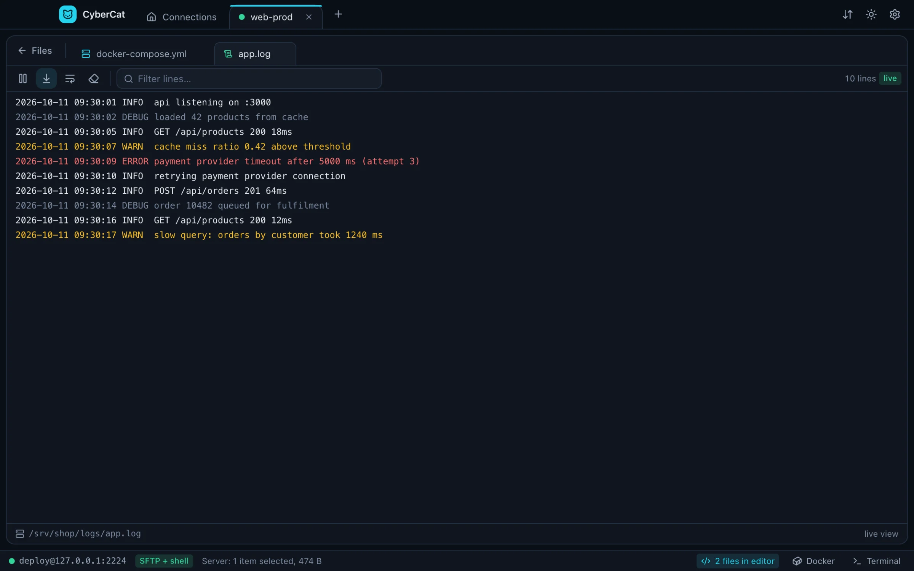
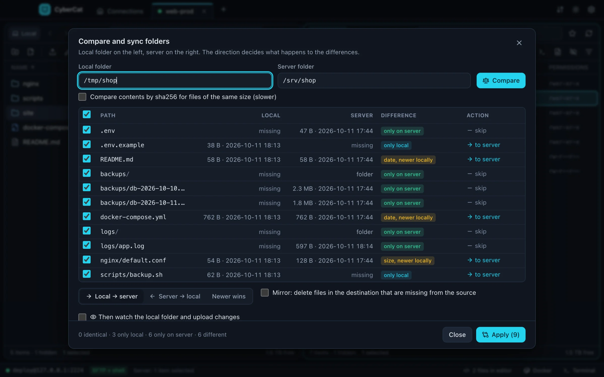
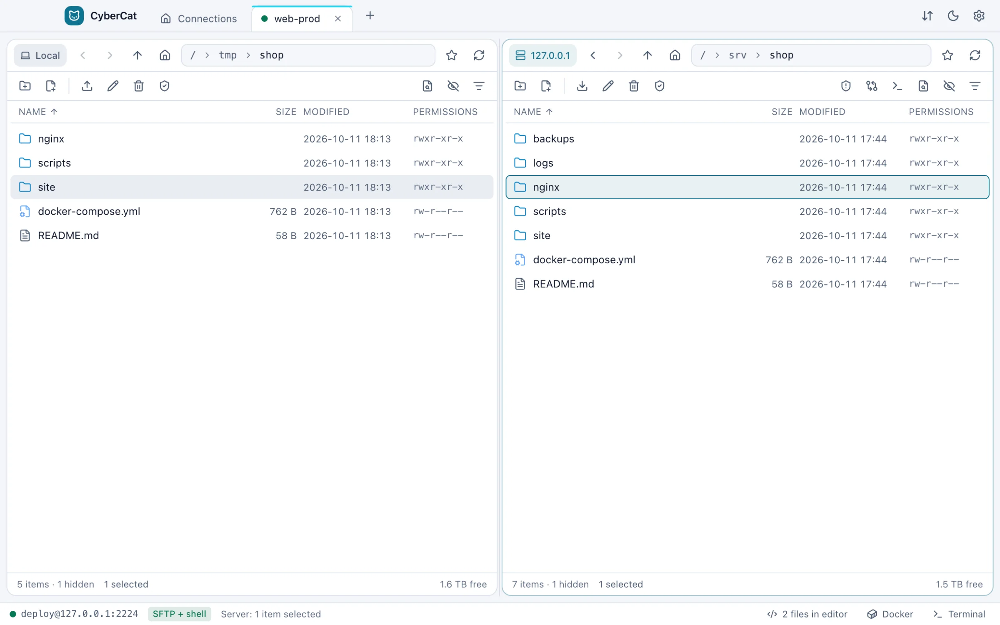
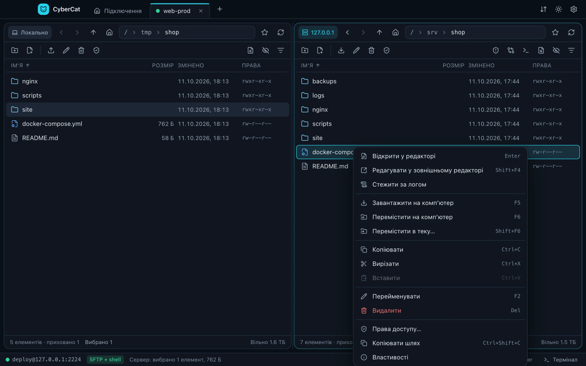
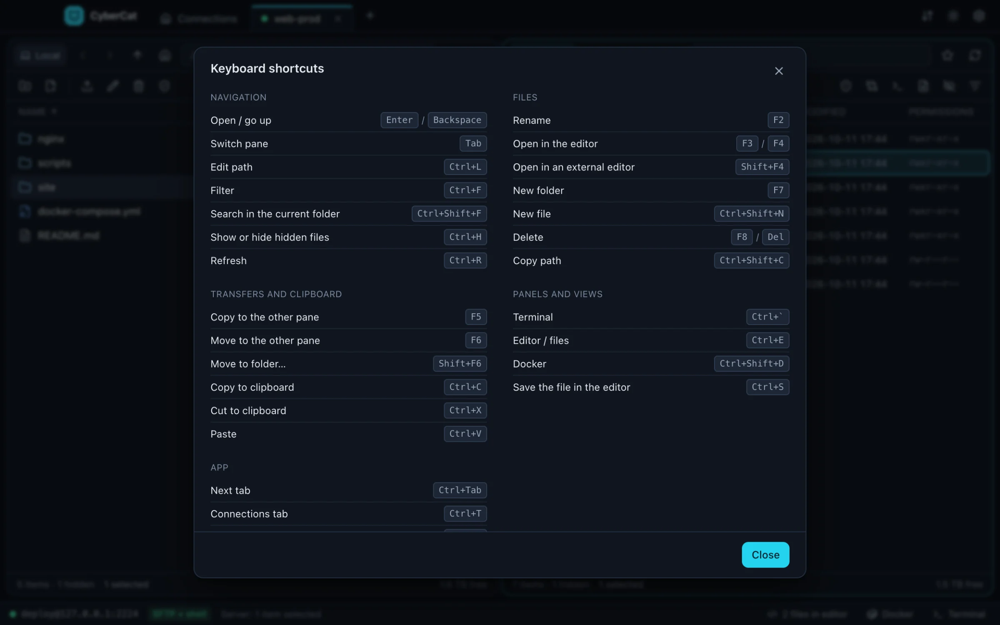

Two panes, zero friction
Local and remote side by side, with a tab for every server. Drag and drop, F5 to copy, F6 to move, breadcrumbs, filter and history.
Free and open source · Windows · macOS · Linux
Two panes, resumable transfers, a real code editor, live logs, a terminal and Docker — all over one SSH connection.

Features
CyberCat replaces the file client, the editor, the log tail and the Docker dashboard you keep open next to your terminal.
Local and remote side by side, with a tab for every server. Drag and drop, F5 to copy, F6 to move, breadcrumbs, filter and history.
A queue with pause, retry and resume from the last committed byte. Lose the connection and it carries on after the reconnect.
Monaco with syntax highlighting. Encoding and line endings stay as they were, saves are atomic, and you're warned if someone changed the file meanwhile.
Follow any log with tail -F: levels in color, a filter, pause and auto-scroll.
xterm.js on the connection you already have, opened in the folder you're looking at.
Containers, images, volumes and compose projects on any server you can SSH into. Logs, a shell inside a container, live CPU and memory.
Browse and edit as root through a second SFTP channel. A red edge on the pane reminds you that it's on.
By size, date or sha256, in either direction or newest wins. Preview the plan, then let watch mode upload changes as you save.
Click a container's published port to open it in your browser through an SSH tunnel.
Find files by name with find and by content with grep, then jump straight to them.
Hosts, users, keys and ProxyJump chains from ~/.ssh/config in one click. Passwords, keys and agents, OpenSSH or Pageant.
Batch rename with regex or templates, your own commands in the context menu, bookmarks, and every action on the keyboard.
Editor
Open any file in the built-in Monaco editor. CyberCat keeps the original encoding and line endings, writes atomically and stops you before you overwrite someone else's change. Prefer your own editor? The file opens there and uploads on every save.

Docker
CyberCat speaks docker and podman over the SSH session you already have. Compose projects get up, restart, pull and down in one click, containers show live CPU and memory, and published ports open in your browser through a tunnel.

Live logs
Follow any file with tail -F in a pseudo-terminal. Errors and warnings stand out, the filter narrows thousands of lines to the ones you care about, and pause keeps your place while new lines queue up.

Sync
Compare a local folder with the server and see exactly what will happen before anything moves. Mirror deletions if you want, then let watch mode upload your changes as you save.

Comfort

Both themes are tuned for contrast, down to the dimmest label.

Switch the language in Settings, without a restart. Adding another one is a single folder of strings.

Function keys from classic file managers, and the full list one keystroke away on F1.
Security
No analytics and no accounts. Besides your SSH connections, the only request is the update check to GitHub, and you can turn it off.
Saved passwords are encrypted by your operating system's credential store. Private keys are read from disk only when you connect.
A new server's fingerprint is remembered on the first connect, and a changed one stops you with a clear warning.
Every line is on GitHub under the MIT license. Read it, build it, change it.
Download
Free for Windows, macOS and Linux.
The first public release is on its way. Until then, build it from source in a couple of minutes, see below.
Updates itself. On first launch SmartScreen may warn: click More info, then Run anyway.
Move CyberCat to Applications, then run this once, because the app isn't notarized by Apple yet:
xattr -dr com.apple.quarantine /Applications/CyberCat.appUpdates itself. Make it executable and run it:
chmod +x CyberCat-*.AppImagegit clone https://github.com/EdFtem/CyberCat.git
cd CyberCat
npm install
npm run devNeeds Node.js 22 or newer. npm run dist builds the installer for your system.
FAQ
Yes. It's open source under the MIT license, with no accounts, no ads and no paid tier.
No telemetry. Apart from the SSH connections you open, CyberCat only checks GitHub Releases for updates, and you can switch that off in Settings → Updates.
Any SSH server with SFTP, such as OpenSSH on Linux, BSD or macOS. File operations work over plain SFTP; the terminal, server search, live logs, sudo mode and Docker also need shell access.
The builds aren't signed with paid certificates yet. On Windows choose More info, then Run anyway; on macOS run the xattr command from the download section once.
CyberCat checks GitHub shortly after it starts and every six hours. On Windows and Linux the update downloads in the background and installs when you restart. On macOS the app tells you about the new version and opens its download page.
Only if you choose to save them, encrypted by your operating system's credential store. SSH agents and keys with passphrases work too.
Please do. Bug reports, ideas and pull requests are welcome on GitHub, and a new interface language is a single folder of strings.